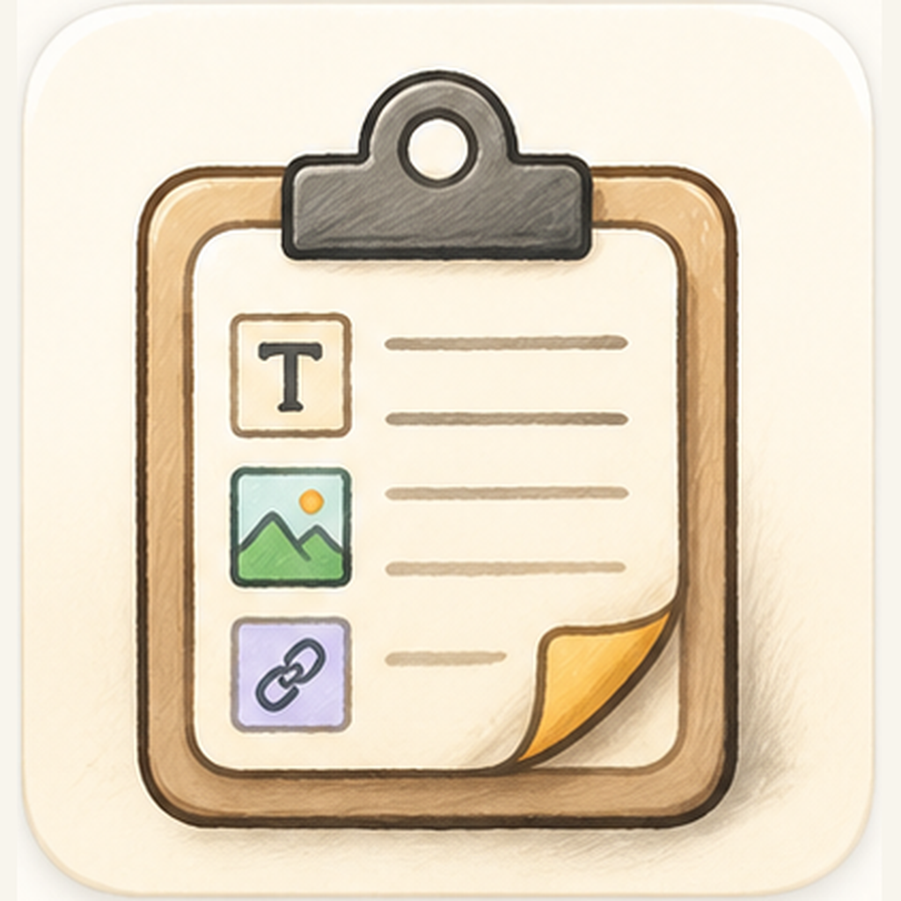

记住每种内容
文本、富文本、图片、文件和颜色，都能留在你的历史里。自动去重，重要内容可以固定。

Just Paste每一次复制，都值得被记住。
LESS HUNTING
文本、富文本、图片、文件和颜色，都能留在你的历史里。自动去重，重要内容可以固定。
面板关闭，原来的 App 回到前台，内容直接贴进当前输入框。
搜索、收藏夹、置顶、粘贴队列。让历史变成可用的工具箱。
MADE TO STAY OUT OF THE WAY
Just Paste 把剪贴板变成一个可靠的中转站。它记住上下文，也尊重你正在使用的 App。
文字、富文本、图片、文件和颜色都可以留在同一个历史里。重复内容自动整理，重要内容可以固定。
输入一个词，马上找到那段代码、链接或临时笔记。搜索结束后，原来的窗口自然回到前台。
历史留在你的电脑上，不需要账号，也不依赖云端同步。你可以随时清理，不留下额外的服务痕迹。
Just Paste 住在菜单栏里，不打扰你。它只在你需要的时候出现。
像平常一样复制任何东西。
按下 ⇧⌘V，历史面板马上出现。
选中它，按回车。继续手头的事。
macOS Universal 包含 Apple Silicon 与 Intel。Windows 与 Linux 使用当前已发布的 x86_64 Release 资产。